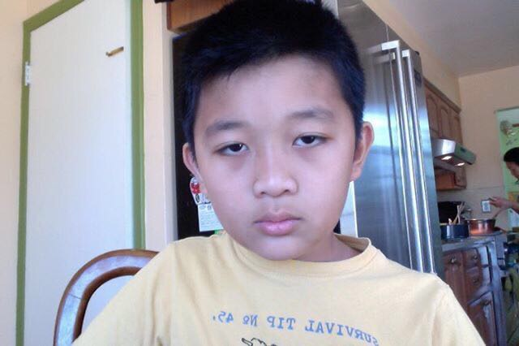
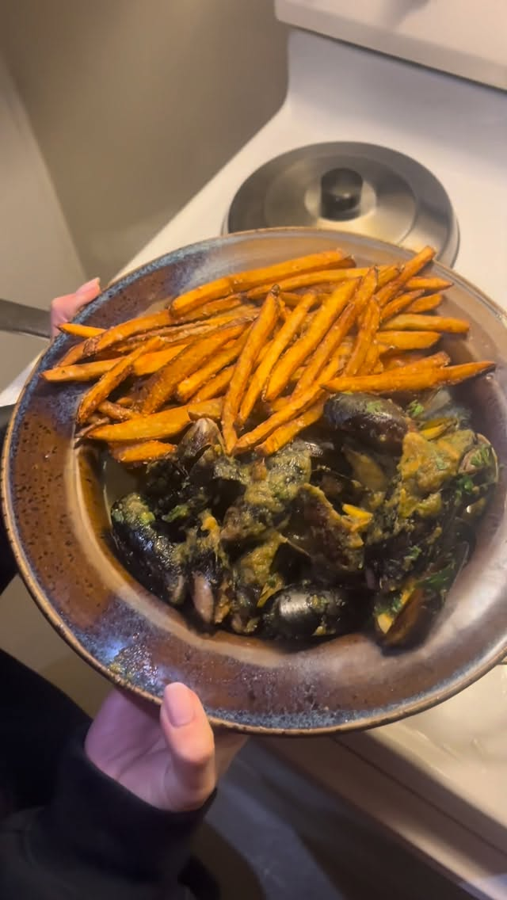

Gallery

About me
Hey, I'm Bill! I like to cook and film it.
Most of what you'll see here started the same way: I saw something on my feed, got a craving, and went for it with whatever I had. I don't have the right ingredients hald the time. I've burnt the onions, overcooked the steak, and in put in a whole container of curry paste. It still turned out good, and I'd do it again.
I cook for the people around me: blah blah blah.
These are the dishes I'm most proud of. Some are perfect, most are close, and all of them are delicious. More coming in 2027.